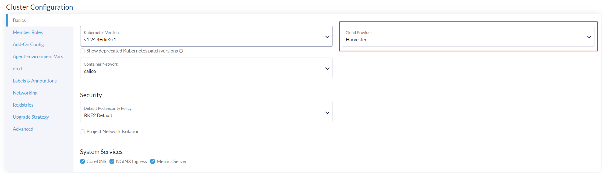
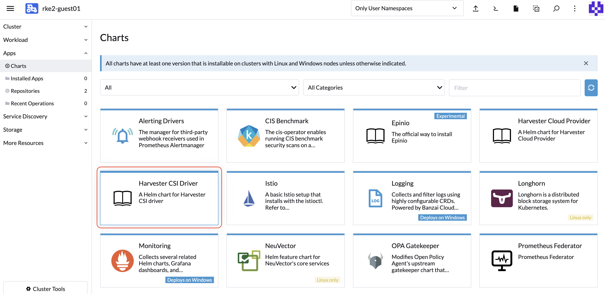
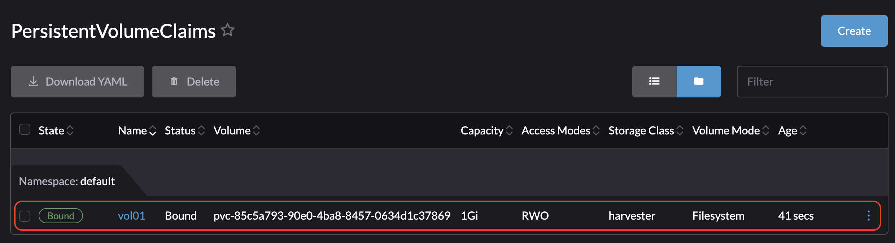
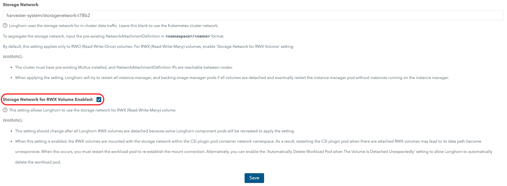

Harvester CSI-Treiber
Der Harvester Container Storage Interface (CSI)-Treiber bietet eine standardisierte CSI-Schnittstelle, die von Gast-Kubernetes-Clustern verwendet wird. Er verbindet sich mit dem Host-Cluster und verbindet Host-Volumes im laufenden Betrieb mit den virtuellen Maschinen, um eine native Speicherleistung bereitzustellen.
Der Harvester CSI-Treiber unterstützt die folgenden Funktionen:
| Harvester CSI-Treiber-Version | SUSE Virtualization Version | Speicherebenen | RWX-Volumes | Online-Größenänderung | Drittanbieter-Speicher | Volume-Snapshots |
|---|---|---|---|---|---|---|
0.1.15 |
Alle Versionen |
✔ |
✖ |
✖ |
✖ |
✖ |
0.1.20 |
v1.4 und höher |
✔ |
✔ |
✖ |
✖ |
✖ |
0.1.24 |
v1.6 und höher |
✔ |
✔ |
✔ |
✔ |
✖ |
0.1.25 |
v1.7 und höher |
✔ |
✔ |
✔ |
✔ |
✔ |
|
Ein bekanntes Problem in v0.1.20 des Harvester CSI-Treibers führt dazu, dass Volumes hängen bleiben, wenn der Host-Cluster eine SUSE Virtualization Version ausführt, die vor v1.4.0 veröffentlicht wurde. Dieses Problem wurde in v0.1.21 behoben. Wenn Ihr System betroffen ist, können Sie dem vorgeschlagenen Workaround folgen.
|
Bereitstellung
Voraussetzungen
-
Der Kubernetes-Cluster basiert auf SUSE Virtualization virtuellen Maschinen.
-
Die SUSE Virtualization virtuellen Maschinen, die als Gast-Kubernetes-Knoten fungieren, befinden sich im selben Namespace.
|
Derzeit unterstützt der Harvester CSI-Treiber nur Ein-Knoten-Lese- und Schreibzugriff (RWO) Volumes. Überprüfen Sie issue #1992 für Informationen zur möglichen Unterstützung von Multi-Knoten-Lesezugriff (ROX) und Lese- und Schreibzugriff (RWX). |
Bereitstellung mit dem Harvester RKE2 Knoten-Treiber
Beim Erstellen eines Kubernetes-Clusters mit dem Rancher RKE2 Knoten-Treiber wird der Harvester CSI-Treiber automatisch bereitgestellt, wenn der Harvester-Cloud-Anbieter ausgewählt ist.

Installieren Sie den CSI-Treiber manuell im RKE2-Cluster
Wenn Sie den Harvester CSI-Treiber installieren möchten, ohne den Harvester-Cloud-Anbieter zu aktivieren, können Sie die folgenden Schritte befolgen:
Voraussetzungen für die manuelle Installation
Stellen Sie sicher, dass Sie die folgenden Voraussetzungen erfüllt haben:
-
Sie haben
kubectlundjqauf Ihrem System installiert. -
Sie haben die
kubeconfigDatei für Ihren Bare-Metal Harvester-Cluster. Sie können diekubeconfigDatei von einem der Harvester-Management-Knoten im/etc/rancher/rke2/rke2.yamlPfad finden.export KUBECONFIG=/path/to/your/harvester-kubeconfig
Führen Sie die folgenden Schritte aus, um den Harvester CSI-Treiber manuell bereitzustellen:
Harvester CSI-Treiber bereitstellen
-
Generieren Sie das
cloud-config. Sie können die Dateicloud-configmit dem generate_addon_csi.sh Skript generieren. Es ist im harvester/harvester-csi-driver Repository verfügbar.<serviceaccount name>entspricht normalerweise dem Namen Ihres Gastclusters, und<namespace>sollte mit dem Namespace des Maschinenpools übereinstimmen../generate_addon_csi.sh <serviceaccount name> <namespace> RKE2
Die generierte Ausgabe wird ähnlich wie die folgende sein:
########## cloud-config ############ apiVersion: v1 clusters: - cluster: <token> server: https://<YOUR HOST HARVESTER VIP>:6443 name: default contexts: - context: cluster: default namespace: default user: rke2-guest-01-default-default name: rke2-guest-01-default-default current-context: rke2-guest-01-default-default kind: Config preferences: {} users: - name: rke2-guest-01-default-default user: token: <token> ########## cloud-init user data ############ write_files: - encoding: b64 content: YXBpVmVyc2lvbjogdjEKY2x1c3RlcnM6Ci0gY2x1c3RlcjoKICAgIGNlcnRpZmljYXRlLWF1dGhvcml0eS1kYXRhOiBMUzB0TFMxQ1JVZEpUaUJEUlZKVVNVWkpRMEZVUlMwdExTMHRDazFKU1VKbFZFTkRRVklyWjBGM1NVSkJaMGxDUVVSQlMwSm5aM0ZvYTJwUFVGRlJSRUZxUVd0TlUwbDNTVUZaUkZaUlVVUkVRbXg1WVRKVmVVeFlUbXdLWTI1YWJHTnBNV3BaVlVGNFRtcG5NVTE2VlhoT1JGRjNUVUkwV0VSVVNYcE5SRlY1VDFSQk5VMVVRVEJOUm05WVJGUk5lazFFVlhsT2FrRTFUVlJCTUFwTlJtOTNTa1JGYVUxRFFVZEJNVlZGUVhkM1dtTnRkR3hOYVRGNldsaEtNbHBZU1hSWk1rWkJUVlJaTkU1VVRURk5WRkV3VFVSQ1drMUNUVWRDZVhGSENsTk5ORGxCWjBWSFEwTnhSMU5OTkRsQmQwVklRVEJKUVVKSmQzRmFZMDVTVjBWU2FsQlVkalJsTUhFMk0ySmxTSEZEZDFWelducGtRa3BsU0VWbFpHTUtOVEJaUTNKTFNISklhbWdyTDJab2VXUklNME5ZVURNeFZXMWxTM1ZaVDBsVGRIVnZVbGx4YVdJMGFFZE5aekpxVVdwQ1FVMUJORWRCTVZWa1JIZEZRZ292ZDFGRlFYZEpRM0JFUVZCQ1owNVdTRkpOUWtGbU9FVkNWRUZFUVZGSUwwMUNNRWRCTVZWa1JHZFJWMEpDVWpaRGEzbEJOSEZqYldKSlVESlFWVW81Q2xacWJWVTNVV2R2WjJwQlMwSm5aM0ZvYTJwUFVGRlJSRUZuVGtsQlJFSkdRV2xCZUZKNU4xUTNRMVpEYVZWTVdFMDRZazVaVWtWek1HSnBZbWxVSzJzS1kwRnhlVmt5Tm5CaGMwcHpMM2RKYUVGTVNsQnFVVzVxZEcwMVptNTZWR3AxUVVsblRuTkdibFozWkZRMldXWXpieTg0ZFRsS05tMWhSR2RXQ2kwdExTMHRSVTVFSUVORlVsUkpSa2xEUVZSRkxTMHRMUzBLCiAgICBzZXJ2ZXI6IGh0dHBzOi8vMTkyLjE2OC4wLjEzMTo2NDQzCiAgbmFtZTogZGVmYXVsdApjb250ZXh0czoKLSBjb250ZXh0OgogICAgY2x1c3RlcjogZGVmYXVsdAogICAgbmFtZXNwYWNlOiBkZWZhdWx0CiAgICB1c2VyOiBya2UyLWd1ZXN0LTAxLWRlZmF1bHQtZGVmYXVsdAogIG5hbWU6IHJrZTItZ3Vlc3QtMDEtZGVmYXVsdC1kZWZhdWx0CmN1cnJlbnQtY29udGV4dDogcmtlMi1ndWVzdC0wMS1kZWZhdWx0LWRlZmF1bHQKa2luZDogQ29uZmlnCnByZWZlcmVuY2VzOiB7fQp1c2VyczoKLSBuYW1lOiBya2UyLWd1ZXN0LTAxLWRlZmF1bHQtZGVmYXVsdAogIHVzZXI6CiAgICB0b2tlbjogZXlKaGJHY2lPaUpTVXpJMU5pSXNJbXRwWkNJNklreGhUazQxUTBsMWFsTnRORE5TVFZKS00waE9UbGszTkV0amNVeEtjM1JSV1RoYVpUbGZVazA0YW1zaWZRLmV5SnBjM01pT2lKcmRXSmxjbTVsZEdWekwzTmxjblpwWTJWaFkyTnZkVzUwSWl3aWEzVmlaWEp1WlhSbGN5NXBieTl6WlhKMmFXTmxZV05qYjNWdWRDOXVZVzFsYzNCaFkyVWlPaUprWldaaGRXeDBJaXdpYTNWaVpYSnVaWFJsY3k1cGJ5OXpaWEoyYVdObFlXTmpiM1Z1ZEM5elpXTnlaWFF1Ym1GdFpTSTZJbkpyWlRJdFozVmxjM1F0TURFdGRHOXJaVzRpTENKcmRXSmxjbTVsZEdWekxtbHZMM05sY25acFkyVmhZMk52ZFc1MEwzTmxjblpwWTJVdFlXTmpiM1Z1ZEM1dVlXMWxJam9pY210bE1pMW5kV1Z6ZEMwd01TSXNJbXQxWW1WeWJtVjBaWE11YVc4dmMyVnlkbWxqWldGalkyOTFiblF2YzJWeWRtbGpaUzFoWTJOdmRXNTBMblZwWkNJNkltTXlZak5sTldGaExUWTBNMlF0TkRkbU1pMDROemt3TFRjeU5qWXpNbVl4Wm1aaU5pSXNJbk4xWWlJNkluTjVjM1JsYlRwelpYSjJhV05sWVdOamIzVnVkRHBrWldaaGRXeDBPbkpyWlRJdFozVmxjM1F0TURFaWZRLmFRZmU1d19ERFRsSWJMYnUzWUVFY3hmR29INGY1VnhVdmpaajJDaWlhcXB6VWI0dUYwLUR0cnRsa3JUM19ZemdXbENRVVVUNzNja1BuQmdTZ2FWNDhhdmlfSjJvdUFVZC04djN5d3M0eXpjLVFsTVV0MV9ScGJkUURzXzd6SDVYeUVIREJ1dVNkaTVrRWMweHk0X0tDQ2IwRHQ0OGFoSVhnNlMwRDdJUzFfVkR3MmdEa24wcDVXUnFFd0xmSjdEbHJDOFEzRkNUdGhpUkVHZkUzcmJGYUdOMjdfamR2cUo4WXlJQVd4RHAtVHVNT1pKZUNObXRtUzVvQXpIN3hOZlhRTlZ2ZU05X29tX3FaVnhuTzFEanllbWdvNG9OSEpzekp1VWliRGxxTVZiMS1oQUxYSjZXR1Z2RURxSTlna1JlSWtkX3JqS2tyY3lYaGhaN3lTZ3o3QQo= owner: root:root path: /var/lib/rancher/rke2/etc/config-files/cloud-provider-config permissions: '0644' -
Kopieren Sie den Inhalt von
cloud-init user dataund fügen Sie ihn in Machine Pools > Show Advanced > User Data ein.
Die Datei
cloud-provider-configwird erstellt, nachdem Sie die oben genannten Cloud-Init-Benutzerdaten angewendet haben. Sie finden sie auf den Gast-Kubernetes-Knoten unter dem Pfad/var/lib/rancher/rke2/etc/config-files/cloud-provider-config. -
Konfigurieren Sie den Cloud Provider entweder auf Default - RKE2 Embedded oder External.

-
Wählen Sie Create aus, um Ihren RKE2-Cluster zu erstellen.
-
Sobald der RKE2-Cluster bereit ist, installieren Sie das Harvester CSI Driver Chart aus dem Rancher-Marktplatz. Standardmäßig müssen Sie den Pfad cloud-config nicht ändern.


|
Wenn Sie den Harvester CSI-Treiber nicht über Rancher installieren möchten (Apps > Charts), können Sie stattdessen Helm verwenden. Der Harvester CSI-Treiber ist als Helm-Chart verpackt. Weitere Informationen finden Sie unter https://charts.harvesterhci.io.. |
Wenn Sie die obigen Schritte befolgen, sollten Sie sehen, dass diese CSI-Treiber-Pods im kube-system Namespace aktiv sind, und Sie können dies überprüfen, indem Sie ein neues PVC mit der Standard-StorageClass harvester in Ihrem RKE2-Cluster bereitstellen.
Bereitstellung mit dem Harvester K3s-Knotentreiber
Sie können die [Deploy Harvester CSI driver] Schritte befolgen, die im RKE2-Abschnitt beschrieben sind.
Der einzige Unterschied besteht darin, dass Sie die cloud-init Konfiguration generieren und dabei den Anbietertyp als k3s angeben müssen:
./generate_addon_csi.sh <serviceaccount name> <namespace> k3sPassen Sie die Standard-StorageClass an
Der Harvester CSI-Treiber bietet die Schnittstelle zur Definition der Standard-StorageClass. Wenn die Standard-StorageClass nicht angegeben ist, verwendet der Harvester CSI-Treiber die Standard-StorageClass des Host-Harvester-Clusters.
Sie können den Parameter host-storage-class verwenden, um die Standard-StorageClass anzupassen.
-
Erstellen Sie eine StorageClass für den Host-Harvester-Cluster.
Beispiel:

-
Stellen Sie den CSI-Treiber mit dem Parameter
host-storage-classbereit.Beispiel:

-
Überprüfen Sie, ob der Harvester CSI-Treiber bereit ist.
-
Erstellen Sie auf dem PersistentVolumeClaims-Bildschirm ein PVC. Wählen Sie Verwenden Sie eine Storage Class, um ein neues Persistent Volume bereitzustellen aus und geben Sie die von Ihnen erstellte StorageClass an.
Beispiel:

-
Sobald das PVC erstellt ist, notieren Sie den Namen des bereitgestellten Volumes und überprüfen Sie, ob der Status Gebunden ist.
Beispiel:

-
Überprüfen Sie auf dem Volumes-Bildschirm, ob das Volume mit der von Ihnen erstellten StorageClass bereitgestellt wurde.
Beispiel:

-
Durchreichen einer benutzerdefinierten StorageClass
Beginnend mit Harvester CSI-Treiber v0.1.15 ist es möglich, einen PersistentVolumeClaim (PVC) mit einer anderen Harvester StorageClass im Gast-Kubernetes-Cluster zu erstellen.
|
Ein kompatibler Harvester CSI-Treiber ist in jeder unterstützten RKE2-Version integriert. |
Voraussetzungen
Fügen Sie die folgenden Voraussetzungen zu Ihrem Harvester-Cluster hinzu, um sicherzustellen, dass der Harvester CSI-Treiber Fehlermeldungen korrekt anzeigt. Die richtigen RBAC-Einstellungen sind entscheidend für die Sichtbarkeit von Fehlermeldungen, insbesondere beim Erstellen eines PVC mit einer nicht vorhandenen StorageClass, wie im Bild unten gezeigt:

Befolgen Sie diese Schritte, um RBAC für die Sichtbarkeit von Fehlermeldungen einzurichten:
-
Erstellen Sie ein neues
clusterrolemit dem Namenharvesterhci.io:csi-driverunter Verwendung des folgenden Manifests.apiVersion: rbac.authorization.k8s.io/v1 kind: ClusterRole metadata: labels: app.kubernetes.io/component: apiserver app.kubernetes.io/name: harvester app.kubernetes.io/part-of: harvester name: harvesterhci.io:csi-driver rules: - apiGroups: - storage.k8s.io resources: - storageclasses verbs: - get - list - watch -
Erstellen Sie ein neues
clusterrolebinding, das mit dem oben genanntenclusterroleund dem relevantenserviceaccountunter Verwendung des folgenden Manifests verbunden ist.apiVersion: rbac.authorization.k8s.io/v1 kind: ClusterRoleBinding metadata: name: <namespace>-<serviceaccount name> roleRef: apiGroup: rbac.authorization.k8s.io kind: ClusterRole name: harvesterhci.io:csi-driver subjects: - kind: ServiceAccount name: <serviceaccount name> namespace: <namespace>
Stellen Sie sicher, dass die
serviceaccount nameundnamespacemit den Einstellungen Ihres Cloud-Anbieters übereinstimmen. Führen Sie die folgenden Schritte aus, um diese Details abzurufen.-
Finden Sie die
rolebinding, die mit Ihrem Cloud-Anbieter verbunden ist:$ kubectl get rolebinding -A |grep harvesterhci.io:cloudprovider default default-rke2-guest-01 ClusterRole/harvesterhci.io:cloudprovider 7d1h
-
Extrahieren Sie die
subjectsInformationen aus diesemrolebinding:$ kubectl get rolebinding default-rke2-guest-01 -n default -o yaml |yq -e '.subjects'
-
Identifizieren Sie die
ServiceAccountInformationen:- kind: ServiceAccount name: rke2-guest-01 namespace: default
-
Bereitstellung
Jetzt können Sie eine neue StorageClass erstellen, die Sie in Ihrem Gast-Kubernetes-Cluster verwenden möchten.
-
Für Administratoren können Sie eine gewünschte StorageClass (z. B. benannt replica-2) in Ihrem Bare-Metal-Harvester-Cluster erstellen.

-
Erstellen Sie dann im Gast-Kubernetes-Cluster eine neue StorageClass, die mit der StorageClass namens replica-2 aus dem Harvester-Cluster verbunden ist:

-
Wählen Sie beim Auswählen eines Provisioner Harvester (CSI) aus. Der Host StorageClass Parameter sollte mit dem Namen der im Harvester-Cluster erstellten StorageClass übereinstimmen.
-
Für Besitzer von Gast-Kubernetes können Sie den Administrator des Harvester-Clusters bitten, eine neue StorageClass zu erstellen.
-
Wenn Sie das Feld
Host StorageClassleer lassen, wird die Standard-StorageClass des Harvester-Clusters verwendet.
-
-
Sie können jetzt ein PVC basierend auf dieser neuen StorageClass erstellen, die die Host StorageClass verwendet, um Volumes im Bare-Metal-Harvester-Cluster bereitzustellen.
RWX Volumenunterstützung
|
RWX-Volumes funktionieren derzeit nur mit einem dedizierten Speichernetzwerk. Issue #7218 verfolgt die Verbesserung, die es RWX-Volumes ermöglichen wird, verschiedene VLANs in Gast-Clustern zu verwenden. |
Voraussetzungen
-
Harvester v1.4 oder höher ist im Hostcluster installiert.
-
Ein Speichernetzwerk ist im Harvester cluster konfiguriert.
Verwenden Sie exclude, um einen Bereich von IP-Adressen für die virtuellen Maschinen des Gast-Clusters zu reservieren.

-
Die Einstellung Storage Network for RWX Volume in der eingebetteten Longhorn-Benutzeroberfläche ist aktiviert.
Gehen Sie zu Allgemein und wählen Sie dann Speichernetzwerk für RWX-Volume aktiviert.

-
Sie haben eine RWX StorageClass im Host-Harvester-Cluster erstellt.
Auf der Storage Class: Im *Bildschirm klicken Sie auf *Als YAML bearbeiten und geben Sie Folgendes an:
kind: StorageClass apiVersion: storage.k8s.io/v1 metadata: name: longhorn-rwx provisioner: driver.longhorn.io allowVolumeExpansion: true reclaimPolicy: Delete volumeBindingMode: Immediate parameters: numberOfReplicas: "3" staleReplicaTimeout: "2880" fromBackup: "" fsType: "ext4" nfsOptions: "vers=4.2,noresvport,softerr,timeo=600,retrans=5"


-
Die Einstellungen für die rollenbasierte Zugriffskontrolle (RBAC) sind auf dem neuesten Stand.
RBAC-Autorisierung verwendet eine spezifische Kubernetes-API-Gruppe, um Autorisierungsentscheidungen bezüglich des Zugriffs auf Computer- oder Netzwerkressourcen zu treffen.
Der Harvester CSI-Treiber benötigt die neuen RBAC-Einstellungen, um RWX-Volumes zu unterstützen. Um die RBAC-Einstellungen zu überprüfen, führen Sie den Befehl
kubectl get clusterrole harvesterhci.io:csi-driver -o yamlaus.# kubectl get clusterrole harvesterhci.io:csi-driver -o yaml apiVersion: rbac.authorization.k8s.io/v1 kind: ClusterRole metadata: ... name: harvesterhci.io:csi-driver ... rules: - apiGroups: - storage.k8s.io resources: - storageclasses verbs: - get - list - watch - apiGroups: - harvesterhci.io resources: - networkfilesystems - networkfilesystems/status verbs: - '*' - apiGroups: - longhorn.io resources: - volumes - volumes/status verbs: - get - list -
Die networkfs-manager Pods laufen.
Um den Status der networkfs-manager Pods zu überprüfen, führen Sie den Befehl
kubectl get pods -n harvester-system | grep networkfs-manageraus.Beispiel:
# kubectl get pods -n harvester-system | grep networkfs-manager harvester-networkfs-manager-2pxhm 1/1 Running 4 (34m ago) 3h41m harvester-networkfs-manager-8tst2 1/1 Running 4 (37m ago) 3h41m harvester-networkfs-manager-xvkgp 1/1 Running 4 (37m ago) 3h41m -
Die Version des Harvester CSI-Treibers ist v0.1.20 oder höher.

-
Die virtuelle Maschine hat zwei Netzwerkschnittstellen: eine Standard-Netzwerkschnittstelle für die Kommunikation innerhalb des Clusters und den Zugriff vom Infrastruktur-Netzwerk (außerhalb des Harvester-Clusters); und ein Netzwerk, das mit dem Speichernetzwerk verbunden werden kann.
Das NAD default/vlan101 wird für das Speichernetzwerk verwendet.

-
Der NFS-Client ist auf jedem Knoten im Gast-Cluster installiert.
Führen Sie einen der folgenden Befehle aus, um den NFS-Client zu installieren.
-
Debian und Ubuntu:
apt-get install -y nfs-common -
CentOS und RHEL:
yum install -y nfs-utils -
SUSE und openSUSE:
zypper install -y nfs-client
-
-
Eine IP wird manuell der Netzwerkschnittstelle des Speichernetzwerks zugewiesen.
Sie können eine der reservierten IPs mit den folgenden Befehlen zuweisen:
$ ip link set <storage network nic> up $ ip a add <reserved IP> dev <storage network nic>
Eine IP, die mit den angegebenen Befehlen zugewiesen wird, bleibt nach einem Neustart nicht bestehen. Um die IP persistent zu machen, müssen Sie sie zur Netzwerkkonfigurationsdatei Ihres Gastbetriebssystems hinzufügen.
Verwendung
-
Erstellen Sie eine neue StorageClass im Gast-Cluster.
Auf der StorageClass: Erstellen Sie im Bildschirm einen Host Storage Class-Parameter und geben Sie die RWX StorageClass an, die Sie im Host-Harvester-Cluster erstellt haben.

-
Erstellen Sie einen RWX PersistentVolumeClaim (PVC).
Auf dem PersistentVolumeClaim: Erstellen Sie auf dem Bildschirm die folgenden Einstellungen:
-
Volume Claim Tab: Geben Sie die neue StorageClass an.

-
Anpassen Tab: Wählen Sie Viele Knoten Lese- und Schreibzugriff aus.

-
-
Überprüfen Sie, ob der RWX PVC erfolgreich erstellt wurde.

-
Erstellen Sie zwei Pods.
Auf dem Pod: Erstellen Sie im Bildschirm den RWX PVC.


|
Sie können die gleichen Schritte befolgen, um einen RWX PVC im Gast-Cluster zu erstellen und ihn dann in Pods zu verwenden, die RWX-Volumes benötigen. |
Online-Volumenvergrößerung
Wenn der zugrunde liegende Speicheranbieter Online-Volumenerweiterung unterstützt, können Sie ein ReadWriteOnce (RWO) Volumen im Gast-Cluster erweitern, während es an eine laufende Arbeitslast angeschlossen ist.
Volume-Snapshots
Ab Version v0.1.25 unterstützt der Harvester CSI-Treiber Volume-Snapshots, die zeitpunktgenaue Sicherungs- und Wiederherstellungsfunktionen für Workloads bieten, die auf Gast-Kubernetes-Clustern ausgeführt werden.
Aktualisieren Sie den CSI-Treiber
|
Der Harvester CSI-Treiber unterstützt Volume-Snapshots ab Version v0.1.25. Die Nutzung dieser Funktion kann je nach Ihrer Kubernetes-Distribution zusätzliche Schritte erfordern.
|
Upgrade RKE2
Um den CSI-Treiber zu aktualisieren, verwenden Sie die Rancher-Benutzeroberfläche, um RKE2 zu aktualisieren. Stellen Sie sicher, dass die neue RKE2-Version den aktualisierten CSI-Treiber unterstützt/bündelt.
-
Gehen Sie zu ☰ > Clusterverwaltung.
-
Suchen Sie das Gast-Cluster, das Sie aktualisieren möchten, und wählen Sie ⋮ > Konfiguration bearbeiten.
-
Wählen Sie Kubernetes-Version.
-
Klicken Sie auf Speichern.